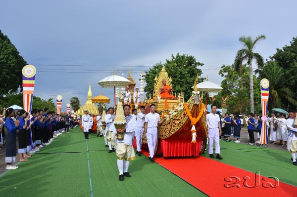
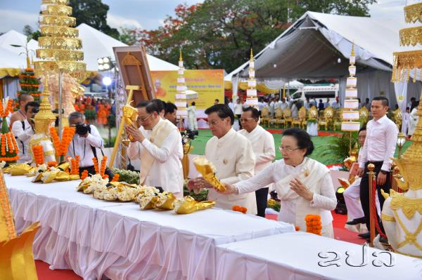

ພິທີຊາປະນະກິດສະຣິຣະສັງຂານ ພະອາຈານໃຫຍ່ ມະຫາບຸນມາ ສິມມາພົມ ປະທານສູນກາງອົງການ ພຸດທະສາສະໜາສຳພັນ ແຫ່ງ ສປປ ລາວ ໄດ້ຈັດຂຶ້ນຢ່າງສົມກຽດ ໃນວັນທີ 17 ພຶດສະພາ 2025 ຢູ່ເດີ່ນພະທາດຫລວງວຽງຈັນ
ຂປລ. ພິທີຊາປະນະກິດສະຣິຣະສັງຂານ ພະອາຈານໃຫຍ່ ມະຫາບຸນມາ ສິມມາພົມ ປະທານສູນກາງອົງການ ພຸດທະສາສະໜາສຳພັນ ແຫ່ງ ສປປ ລາວ ໄດ້ຈັດຂຶ້ນຢ່າງສົມກຽດ ໃນວັນທີ 17 ພຶດສະພາ 2025 ຢູ່ເດີ່ນພະທາດຫລວງວຽງຈັນ ໂດຍມີ ພະເຖລານຸເຖລະ, ພະອາຈານໃຫຍ່ ຈາກວັດຕ່າງໆ ທັງພາຍໃນ ແລະ ຕ່າງປະເທດ, ມີທ່ານ ທອງລຸນ ສີສຸລິດ ປະທານປະເທດ, ທ່ານ ສອນໄຊ ສີພັນດອນ ນາຍົກລັດຖະມົນຕີ, ບັນດາການນຳ, ອະດີດການນຳ ພັກ, ລັດ ຕະຫລອດຮອດພຸດທະສາສະນິກະຊົນລາວ ບັນດາເຜົ່າ ເຂົ້າຮ່ວມຢ່າງຫລວງຫລາຍ.
ໂອກາດນີ້, ທ່ານ ສິນລະວົງ ຄຸດໄພທູນ ປະທານສູນກາງແນວລາວສ້າງຊາດ, ທັງເປັນຫົວໜ້າ ຄະນະຮັບຜິດຊອບງານຊາປະນະກິດ ໄດ້ຂຶ້ນກ່າວສະດຸດີ ເຊິ່ງມີເນື້ອໃນບາງຕອນ ວ່າ: ພະອາຈານໃຫຍ່ ມະຫາບຸນມາ ສິມມາພົມໄດ້ລະສັງຂານ ໃນວັນພະຫັດ ທີ 17 ເມສາ 2025 ພຸດທະສັງກາດ 2567, ເວລາ 00:22 ໂມງ, ລວມສີຣິອາຍຸ 92 ປີ, ວັດສາຍຸການ 72 ພັນ. ການລະສັງຂານຂອງພະອາຈານໃຫຍ່ ແມ່ນການສູນເສຍພະມະຫາເຖຣະອົງໜຶ່ງຂອງ ປະເທດຊາດ ແລະ ຂອງອົງການພຸດທະສາສະໜາລາວ, ເປັນການສູນເສຍອັນໃຫຍ່ຫລວງ, ຊຶ່ງໄດ້ນໍາເອົາຄວາມໂສກເສົ້າ ແລະ ອາໄລອາວອນອັນສຸດຊຶ້ງໃຫ້ແກ່ ອົງການພຸດທະສາສະໜາສຳພັນລາວ, ການຈັດຕັ້ງພັກ-ລັດ, ແນວລາວສ້າງຊາດ ແລະ ພຸດທະສາສະນິກະຊົນທັງພາຍໃນ ແລະ ຕ່າງປະເທດ. ແຕ່ເຖິງຢ່າງໃດກໍຕາມ ເຖິງວ່າພະອາຈານໃຫຍ່ ໄດ້ລະສັງຂານຈາກພວກເຮົາ ໄປຢ່າງບໍ່ມີວັນຫວນກັບຄືນມາກໍຕາມ, ແຕ່ຜົນງານ, ຄຸນງາມຄວາມດີ, ຄໍາສັ່ງສອນ ແລະ ແບບຢ່າງໃນການປະພຶດປະຕິບັດ ຂອງພະອາຈານໃຫຍ່ ຍັງຝັງເລິກຢູ່ໃນຫົວໃຈຫລາຍດວງ ຂອງພະສົງສາມະເນນ, ພຸດທະສາສະນິກະຊົນລາວບັນດາເຜົ່າ ຕະຫລອດໄປ. ຜົນງານ ແລະ ຄຸນງາມຄວາມດີອັນປະເສີດ ຂອງພະອາຈານໃຫຍ່ ຈະຖືກຈາລຶກໄວ້ໃນປະຫວັດສາດຂອງຊາດ ແລະ ຂອງອົງການພຸດທະສາສະໜາຕໍ່ໆໄປ.
ພະອາຈານໃຫຍ່ ມະຫາບຸນມາ ສິມມາພົມ ເປັນຜູ້ທີ່ມີນໍ້າໃຈຮັກຊາດແຕ່ອາຍຸຍັງເຍົາໄວ, ເພິ່ນໄດ້ປະກອບ ສ່ວນສໍາຄັນເຂົ້າໃນ ການປະຕິວັດຕໍ່ສູ້ກູ້ຊາດຕັ້ງແຕ່ອາຍຸພຽງ 12 ປີ, ເພິ່ນໄດ້ເຮັດໜ້າທີ່ ເປັນຜູ້ລຳລຽງຂົນສົ່ງສະບຽງອາຫານ ແລະ ສົ່ງຈົດໝາຍໃຫ້ກຳລັງປະຕິວັດ. ພາຍຫລັງທີ່ເພິ່ນບວດເປັນພະພິກຂຸ ຍ້ອນເຫັນໄດ້ຄວາມໂຫດຮ້າຍປ່າເຖື່ອນ, ການກົດຂີ່ຂົ່ມເຫັງຂອງພວກຈັກກະພັດລ່າເມືອງຂຶ້ນ ແລະ ລູກແຫລ້ງຕີນມື ທີ່ມີຕໍ່ປະເທດຊາດ, ຕໍ່ປະຊາຊົນລາວບັນດາເຜົ່າ, ດ້ວຍຄວາມສະດຸ້ງໄວ, ດ້ວຍນໍ້າໃຈຮັກຊາດ, ຮັກຄວາມເປັນທໍາ ເພິ່ນຈຶ່ງເປັນຕົວແທນ ໃຫ້ແກ່ພະສົງອົງອື່ນໆສືບຕໍ່ເຄື່ອນໄຫວແບບປິດລັບ, ໃຫ້ການຊ່ວຍເຫລືອນັກປະຕິວັດ, ຂົນຂວາຍພະສົງ-ສາມະເນນ ໃຫ້ເຫັນແຈ້ງຕໍ່ແນວທາງຕໍ່ສູ້ກູ້ຊາດ ກໍຄື ແນວທາງສັນຕິພາບເປັນກາງ ຂອງແນວລາວຮັກຊາດ. ພະອາຈານໃຫຍ່ຍາມໃດກໍຍຶດໝັ້ນ ຕໍ່ຄໍາຂວັນຂອງອົງການພຸດທະສາສະໜາ ສຳພັນລາວ ທີ່ວ່າ: ປະເທດຊາດ ກັບພະພຸດທະສາສະໜາ, ພະສົງ-ສາມະເນນ ກັບປະຊາຊົນລາວ, ແນວທາງນະໂຍບາຍຂອງພັກ ກັບຫລັກທໍາຄໍາສອນທາງພຸດທະສາສະໜາ ບໍ່ສາມາດທີ່ຈະຕັດແຍກອອກຈາກກັນໄດ້, ທິດທາງກ້າວເດີນ ແລະ ເປົ້າໝາຍປາຍທາງຂອງປະເທດຊາດທີ່ພັກ ວາງໄວ້ຄືແນວໃດນັ້ນ ອົງການພຸດທະສາສະໜາກໍວາງເປົ້າໝາຍ ແລະ ເດີນຕາມເສັ້ນທາງນັ້ນຢ່າງບໍ່ຫວັນໄຫວຄອນແຄນ. ພະອາຈານໃຫຍ່ມີຄະຕິເຕືອນໃຈໃຫ້ແກ່ລູກສິດ ແລະ ສາສະນິກະຊົນມາໂດຍຕະຫລອດນັ້ນກໍຄື ໃຫ້ປະພຶດ ແລະ ປະຕິບັດ 5 ຮັກ ຄື: "ຮັກຕົນເອງ, ຮັກພໍ່ແມ່, ຮັກຄູບາອາຈານ, ຮັກບ້ານເກີດເມືອງນອນ ແລະ ຮັກປະເທດຊາດ”.
ໃນຕະຫລອດ 7 ທົດສະວັດກວ່າທີ່ຜ່ານມາ, ນັບແຕ່ບວດເປັນພະພິກຂຸ ທີ່ວັດສີດາຈັນ ບ້ານດອນໄຊ ເມືອງສຸຂຸມມາ ຈົນຮອດໄລຍະທີ່ເພິ່ນດຳລົງຕຳແໜ່ງເປັນປະທານສູນກາງອົງການພຸດລາວ ອົງທີ 6, ຊຶ່ງລວມອາຍຸໄດ້ 92 ປີ ແລະ 72 ພັນສານັ້ນ, ພະອາຈານໃຫຍ່ ໄດ້ຮ່ວມກັບຄະນະສົງລາວອົງອື່ນໆອຸທິດໝົດຊີວິດຂອງຕົນ ເພື່ອເສີມສ້າງຄຸນນະທຳຂອງພຸດທະສາສະໜາ ແລະ ເສີມສ້າງຄວາມສາມັກຄີປອງດອງຂອງປະຊາຊົນລາວບັນດາເຜົ່າ ແລະ ບັນດາສາສະໜາ ໃນ ສປປ ລາວ ແລະ ຕ່າງປະເທດ, ເພິ່ນເປັນພະມະຫາເຖຣະທີ່ມີຄວາມຮູ້, ມີຄວາມສາມາດ, ມີບົດບາດອິດທິພົນ ເປັນທີ່ເຫລື້ອມໃສສັດທາຂອງພະສົງ-ສາມະເນນ, ພຸດທະສາສະນິກະຊົນທັງພາຍໃນ ແລະ ຕ່າງປະເທດ, ເປັນຜູ້ທີ່ມີຄວາມໜັກແໜ້ນ ແລະ ເຄັ່ງຄັດໃນພະທຳວິໄນ, ປະຕິບັດກິດຈະວັດຂອງສົງ, ເປັນພະສົງທີ່ລຽບງ່າຍ, ສັນໂດດ, ບໍ່ຖືຕົວ, ເປັນຜູ້ມີຄວາມເມດຕາ, ມີຄວາມສາມັກຄີ. ຍາມໃດເພິ່ນກໍຕັ້ງໜ້າສຶກສາຮໍ່າຮຽນ ແລະ ປະພຶດໃນຫລັກທໍາຄໍາສອນທາງພຸດທະສາສະໜາ, ເປັນພະສົງ ທີ່ມີບົດຮຽນປະສົບການທີ່ດີເດັ່ນ ວຽກງານປົກຄອງ ແລະ ວຽກງານສາທາລະນຸປະການສົງ.
ໃນໄລຍະດຳລົງຕໍາແໜ່ງເປັນ ປະທານສູນກາງອົງການພຸດລາວ ພະອາຈານໃຫຍ່ໄດ້ຮ່ວມກັບ ໝູ່ຄະນະ ນໍາພາວຽກງານ ຂອງອົງການສົງລາວມີຫລາຍອັນທີ່ພົ້ນເດັ່ນ ເປັນຕົ້ນ ໄດ້ນໍາພາດໍາເນີນ ກອງປະຊຸມໃຫຍ່ຜູ້ແທນສົງທົ່ວປະເທດ ສະໄໝທີ VIII, ພ້ອມທັງ ນໍາພາກຳນົດວິໄສທັດ ຮອດປີ 2040, ຍຸດທະສາດຮອດປີ 2030, ແຜນວຽກຈຸດສຸມ 5 ປີ ຂອງອົງການພຸດທະສາສະໜາລາວ, ພ້ອມທັງນໍາພາຈັດຕັ້ງປະຕິບັດ ມະຕິດັ່ງກ່າວມີຜົນສໍາເລັດຢ່າງຈົບງາມ; ໄດ້ນໍາພາປັບປຸງທຳມະນູນ ການປົກຄອງສົງລາວ ສະບັບ II ໃຫ້ແທດເໝາະກັບສະພາບແວດລ້ອມການເມືອງ ແລະ ສັງ ຄົມລາວ ໄລຍະໃໝ່; ໄດ້ສືບຕໍ່ນໍາພາຮຽບຮຽງ ພະໄຕປິດົກສະບັບເປັນພາສາລາວ ແລະ ພາສາລາວບາລີ, ທັງໄດ້ຈັດພິມຈໍານວນ 5.000 ຊຸດ, ຊຸດລະ 45 ຫົວ ຖືເປັນຄັ້ງປະຫວັດສາດ ທາງພຸດທະສາສະໜາ ຂອງລາວເຮົາ; ເພິ່ນໄດ້ສືບຕໍ່ນໍາພາອອກຕົນຍາດໂຍມ ສ້າງກຸດຕິປະທານສົງສໍາເລັດໂດຍພື້ນຖານ, ໄດ້ນໍາພາບູລະນະພະທາດດອນໄຊ ແຂວງຈໍາປາສັກ; ໄດ້ນໍາພາສ້ອມແປງ ແລະ ສ້າງວັດວາອາ ຮາມ, ໂຮງຮຽນສົງ, ສ້າງສຸກສາລາ, ສ້າງຂົວ ແລະ ອະນຸເຄາະແກ່ປະຊາຊົນ ເຂດຫ່າງໄກສອກຫລີກ; ເພິ່ນໄດ້ອອກເຫື່ອເທແຮງ ໃນການເທດສະໜາສັ່ງສອນ ພຸດທະສາສະນິກະຊົນ ໃຫ້ປະພຶດຕົນເປັນຄົນດີ ຂອງຊາດ, ເສີມສ້າງຄຸນນະທໍາ ແລະ ເສີມສ້າງຄວາມສາມັກຄີ ປອງດອງອັນດີງາມຂອງປະຊາຊົນທັງປວງ; ພິເສດໃນໄລຍະການແຜ່ ລະບາດພະຍາດໂຄວິດ-19 ແລະ ໄລຍະເກີດໄພພິບັດນໍ້າຖ້ວມ ພະອາຈານໃຫຍ່ ໄດ້ລະດົມສັດທາຍາດໂຍມຈາກພາຍໃນ ແລະ ຕ່າງປະເທດເພື່ອອະນຸເຄາະແກ່ ປະຊາຊົນທີ່ໄດ້ຮັບຜົນກະທົບ ຈາກໄພພິບັດ ໂດຍມີມູນຄ່າຫລວງຫລາຍ.
ຄຽງຄູ່ກັບການປັບປຸງວຽກງານ ຂອງອົງການພຸດທະສາສະໜາລາວແລ້ວ, ເພິ່ນຍັງໄດ້ເສີມສ້າງສາຍພົວພັນ ລະຫວ່າງອົງການພຸດລາວ ກັບອົງການພຸດໃນພາກພື້ນ ແລະ ສາກົນ ເປັນຕົ້ນ ກັບພຸດຫວຽດນາມ, ກຳປູເຈຍ, ໄທ, ສປ ຈີນ, ມຽນມາ, ຍີ່ປຸ່ນ ແລະ ພິເສດໄດ້ພະຍາຍາມຟື້ນຟູວັດ ລາວຢູ່ອິນເດຍ ແລະ ອື່ນໆ. ດ້ວຍຜົນງານ ແລະ ຄຸນງາມຄວາມດີ ຂອງພະອາຈານໃຫຍ່ ທີ່ມີຕໍ່ປະເທດຊາດ ແລະ ພຸດທະສາສະໜາ. ພັກ-ລັດ ແລະ ອົງການຈັດຕັ້ງຕ່າງໆທັງພາຍໃນ ແລະ ຕ່າງປະເທດ ຈຶ່ງໄດ້ຍ້ອງຍໍ ສັນລະເສີນຕໍ່ເພິ່ນດ້ວຍ ຫລຽນກຽດຕິຄຸນປະເພດຕ່າງໆ ຄື: ໄດ້ຮັບຫລຽນກຽດຕິຄຸນປະທານປະເທດ ສປປ ລາວ 1 ໜ່ວຍ; ຫລຽນກາລະນຶກວັນສ້າງຕັ້ງ ສປປ ລາວ ຄົບຮອບ 30 ປີ ຈໍານວນ 1 ໜ່ວຍ; ຫລຽນກາລະນຶກວັນສ້າງຕັ້ງ ແນວລາວສ້າງຊາດ ຄົບຮອບ 60 ປີ ແລະ 70 ປີ ປະເພດລະ 1 ໜ່ວຍ; ໃບກຽດຕິຄຸນຈາກກະຊວງ-ອົງການ ແລະ ທ້ອງຖິ່ນ ຈໍານວນ 53 ໃບ; ໄດ້ຮັບດຸດສະດີບັນດິດກິດຕິມະສັກ 1 ໃບ ແລະ ຮັບສະມະນະສັກ 2 ຄັ້ງຈາກລັດຖະບານ ແລະ ມະຫາວິທະຍາໄລຢູ່ຕ່າງປະເທດ.